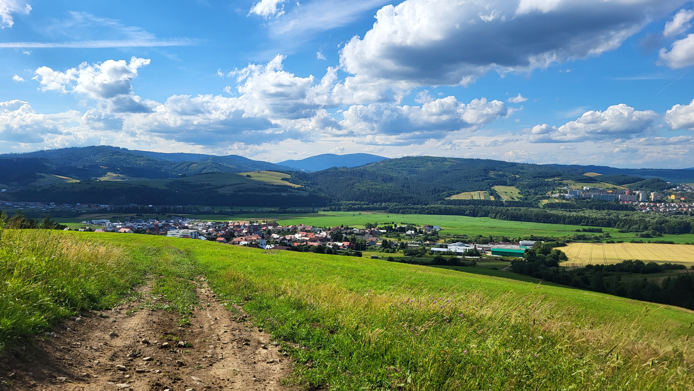

Some things that I enjoy

Runing over hills and forests is one of the most relaxing
thing to do.
Morning at the beach feels like out of this world.
Sun set or sunrise are the most beautiful things i have ever seen.
Everytime I see it, it makes me feel good and nostalgic.
“In this world, wherever there is
light – there are also shadows. As long as the concept
of winners exists, there must also be losers.” – Madara Uchiha